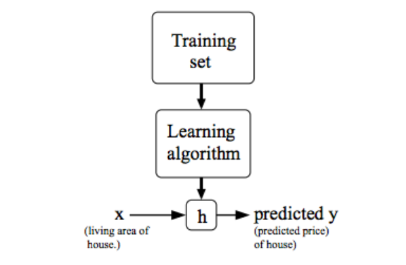
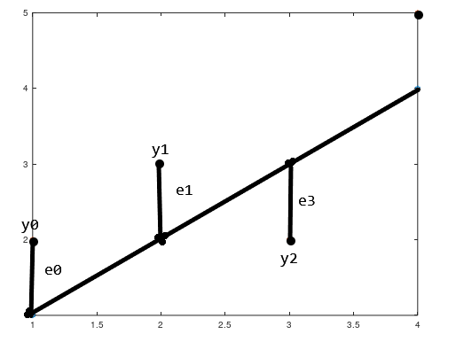

<!DOCTYPE html>
<html>
<head><meta name="generator" content="Hexo 3.9.0">
  <!-- hexo-inject:begin --><!-- hexo-inject:end --><meta charset="UTF-8">
  
  <meta name="description" content="lightdm&#39;s Blog">
  

  
  <meta name="keywords" content="blog.IT.">
  
  
  <meta name="google-site-verification" content="true">
  <meta name="baidu-site-verification" content="true">
  <meta name="msvalidate.01" content="BBA0F05A054A52937A445B0457B5D099">
  
  <title style="text-align:center">机器学习之线性回归 | 月之燃梦</title>
  <meta name="viewport" content="width=device-width, initial-scale=1, maximum-scale=1">
  <meta http-equiv="Content-Type" content="text/html; charset=UTF-8">
  <meta name="description" content="自己早已对机器学习观望已久，现在不入门，更待何时？在找到Coursera时，发现教学方法很对胃口，于是开始ML之旅…现在在这里总结一下机器学习之线性回归。">
<meta name="keywords" content="ML,监督学习,线性回归,梯度下降算法,正规方程">
<meta property="og:type" content="article">
<meta property="og:title" content="机器学习之线性回归">
<meta property="og:url" content="https://www.lightdream.xyz/MachineLearning-LinerRegression.html">
<meta property="og:site_name" content="月之燃梦">
<meta property="og:description" content="自己早已对机器学习观望已久，现在不入门，更待何时？在找到Coursera时，发现教学方法很对胃口，于是开始ML之旅…现在在这里总结一下机器学习之线性回归。">
<meta property="og:locale" content="zh-Hans">
<meta property="og:image" content="https://www.lightdream.xyz/image/LinerRgressionModel.png">
<meta property="og:image" content="https://www.lightdream.xyz/image/linerRegression.png">
<meta property="og:updated_time" content="2020-04-04T15:24:56.400Z">
<meta name="twitter:card" content="summary">
<meta name="twitter:title" content="机器学习之线性回归">
<meta name="twitter:description" content="自己早已对机器学习观望已久，现在不入门，更待何时？在找到Coursera时，发现教学方法很对胃口，于是开始ML之旅…现在在这里总结一下机器学习之线性回归。">
<meta name="twitter:image" content="https://www.lightdream.xyz/image/LinerRgressionModel.png">
  
  
    <link rel="icon" href="/image/favicon.ico">
  
  <link rel="stylesheet" href="css/style.css">
  
<!-- Google Analytics -->
<script type="text/javascript">
(function(i,s,o,g,r,a,m){i['GoogleAnalyticsObject']=r;i[r]=i[r]||function(){
(i[r].q=i[r].q||[]).push(arguments)},i[r].l=1*new Date();a=s.createElement(o),
m=s.getElementsByTagName(o)[0];a.async=1;a.src=g;m.parentNode.insertBefore(a,m)
})(window,document,'script','//www.google-analytics.com/analytics.js','ga');

ga('create', 'true', 'auto');
ga('send', 'pageview');

</script>
<!-- End Google Analytics -->


  
  <!-- -->
  <link rel="stylesheet" href="//cdn.jsdelivr.net/gh/highlightjs/cdn-release@10.1.1/build/styles/atom-one-light.min.css">
  <script src="//cdn.jsdelivr.net/gh/highlightjs/cdn-release@10.1.1/build/highlight.min.js"></script>
  <!-- baidutongji -->
  <script type="text/javascript">
		var _hmt = _hmt || [];
		(function() {
		  var hm = document.createElement("script");
		  hm.src = "https://hm.baidu.com/hm.js?21db01c8f539883ad7f58ebd48f05a73";
		  var s = document.getElementsByTagName("script")[0]; 
		  s.parentNode.insertBefore(hm, s);
		})();
   </script>
   <!--baiduformit -->
   <script>
	(function(){
		var bp = document.createElement('script');
		var curProtocol = window.location.protocol.split(':')[0];
		if (curProtocol === 'https') {
			bp.src = 'https://zz.bdstatic.com/linksubmit/push.js';        
		}
		else {
			bp.src = 'http://push.zhanzhang.baidu.com/push.js';
		}
		var s = document.getElementsByTagName("script")[0];
		s.parentNode.insertBefore(bp, s);
	})();
	</script>
	<script src="//unpkg.com/valine/dist/Valine.min.js"></script>
<link rel="alternate" href="atom.xml" title="月之燃梦" type="application/atom+xml"><!-- hexo-inject:begin --><!-- hexo-inject:end -->
</head></html>
<body class="home blog custom-background custom-font-enabled single-author">
  <!-- hexo-inject:begin --><!-- hexo-inject:end --><div id="page" class="feed site">
      <header id="masthead" class="site-header" role="banner">
    <hgroup>
      <h1 class="site-title">
        <a href="index.html" title="月之燃梦" rel="home">月之燃梦</a>
      </h1>
      
        <h2 class="site-description">
          <a href="index.html" id="subtitle">完全属于自己的安静的一隅</a>
        </h2>
      
    </hgroup>

    <nav id="site-navigation" class="main-navigation" role="navigation">
            <button class="menu-toggle">菜单</button>
            <a class="assistive-text" href="/#content" title="跳至内容">跳至内容</a><!--TODO-->
            <div id="menu-main-content" class="menu-main-container">
                <ul id="menu-main" class="nav-menu">
                
                    <li class="menu-item menu-item-type-post_type menu-item-object-page"><a href="index.html">主页</a></li>
                
                    <li class="menu-item menu-item-type-post_type menu-item-object-page"><a href="/archives">归档</a></li>
                
                    <li class="menu-item menu-item-type-post_type menu-item-object-page"><a href="/views">关于</a></li>
                
                    <li class="menu-item menu-item-type-post_type menu-item-object-page"><a href="/atom.xml">订阅</a></li>
                
                    <li class="menu-item menu-item-type-post_type menu-item-object-page"><a href="/road">求索</a></li>
                
                </ul>
            </div>
    </nav>
	<script src='//unpkg.com/valine/dist/Valine.min.js'></script>
</header>
      <div id="main" class="wrapper">
        <div id="primary" class="site-content">
			<div id="content" role="main"><article id="post-MachineLearning-LinerRegression" class="post-MachineLearning-LinerRegression post type-post status-publish format-standard hentry">
		
      <center><header class="entry-header">
        
        
  
    <h1 class="entry-title article-title">
      机器学习之线性回归
    </h1>
  

		<div style="margin-top:10px;">
    <span class="post-time1">
      <span class="post-meta-item-icon">
        <i class="fa fa-keyboard-o"></i>
        <span class="post-meta-item-text">字数统计:</span>
        <span class="post-count">1,495字</span>
      </span>
    </span>
	&nbsp;|
    <span class="post-time2">
    <span class="post-meta-item-icon">
        <i class="fa fa-hourglass-half"></i>
        <span class="post-meta-item-text">阅读时长:约</span>
        <span class="post-count">6&nbsp;分钟</span>
      </span>
    </span>
</div>
        	 
      </header></center>
	  <!-- .entry-header -->
    <div class="entry-content">
      
		<center><span id="busuanzi_container_page_pv">
		总阅读量<span id="busuanzi_value_page_pv"></span>次
		</span></center>
		</br></br>
        <script src="\assets\js\APlayer.min.js"> </script><p>　　自己早已对机器学习观望已久，现在不入门，更待何时？在找到<a href="https://www.coursera.org/learn/machine-learning">Coursera</a>时，发现教学方法很对胃口，于是开始ML之旅…现在在这里总结一下机器学习之线性回归。<br><a id="more"></a><br>　　机器学习有很多种方式，比如监督学习，半监督学习，无监督学习等。它们区别于训练集的种类，比如监督学习的训练集其每一个训练样本都有正确的答案，而无监督学习则没有，只能通过算法自动分类。而半监督学习，顾名思义，一部分是监督学习，一部分是无监督学习。  </p>
<h3 id="监督学习"><a href="#监督学习" class="headerlink" title="监督学习"></a>监督学习</h3><p>　　监督学习又分为聚类和回归。其中聚类是预测连续值，回归是预测离散值。例如垃圾邮件识别，网页类别划分等是聚类。预测房价、股票涨跌等是回归。<br>下面总结一下线性回归。</p>
<h3 id="线性回归"><a href="#线性回归" class="headerlink" title="线性回归"></a>线性回归</h3><p>线性回归模型</p>
<blockquote>
<p>截取自Coursera课程课件    </p>
</blockquote>
<p><center></center><br>假设有房价数据集如下:</p>
<div class="table-container">
<table>
<thead>
<tr>
<th style="text-align:center">房子面积/$m_{2}$(x)</th>
<th style="text-align:center">价格/w(y)</th>
</tr>
</thead>
<tbody>
<tr>
<td style="text-align:center">80</td>
<td style="text-align:center">40</td>
</tr>
<tr>
<td style="text-align:center">90</td>
<td style="text-align:center">60</td>
</tr>
<tr>
<td style="text-align:center">100</td>
<td style="text-align:center">80</td>
</tr>
<tr>
<td style="text-align:center">…</td>
<td style="text-align:center">…</td>
</tr>
</tbody>
</table>
</div>
<p><strong>数据集1</strong><br>以下为一些字母的含义：     </p>
<hr>
<div class="table-container">
<table>
<thead>
<tr>
<th style="text-align:center">字母</th>
<th style="text-align:center">含义</th>
</tr>
</thead>
<tbody>
<tr>
<td style="text-align:center">$m$</td>
<td style="text-align:center">表示训练样本数量</td>
</tr>
<tr>
<td style="text-align:center">$x$</td>
<td style="text-align:center">表示输入特征(特征量)</td>
</tr>
<tr>
<td style="text-align:center">$y$</td>
<td style="text-align:center">表示输出变量(目标量)</td>
</tr>
<tr>
<td style="text-align:center">$(x,y)$</td>
<td style="text-align:center">表示一个训练样本</td>
</tr>
<tr>
<td style="text-align:center">$(x^{(i)},y^{(i)})$</td>
<td style="text-align:center">表示第i个训练样本</td>
</tr>
</tbody>
</table>
</div>
<hr>
<p>对应于线性回归的<strong>假设函数(hypothesis function)</strong>为 </p>
<script type="math/tex; mode=display">h_{\theta}(x)=\theta_{0}+\theta_{1}x</script><p>其中$\theta$为参数<br>对应的<strong>代价函数(cost function)</strong>(其图像为一个凹函数)为</p>
<script type="math/tex; mode=display">J(\theta_{0},\theta_{1})=\frac{1}{2m}\sum_{i=1}^{m}(h_{\theta}(x^{(i)})-y^{(i)})^2</script><p>这个方程有什么<strong>意义</strong>呢？<br>下面是一个散点图:</p>
<p><center></center><br>由图片e表示假设函数结果与训练样本之间的误差。</p>
<script type="math/tex; mode=display">e_{0}=h_{\theta}(1)-y_{0}</script><script type="math/tex; mode=display">e_{1}=h_{\theta}(2)-y_{1}</script><script type="math/tex; mode=display">e_{2}=h_{\theta}(3)-y_{2}</script><script type="math/tex; mode=display">...</script><p>所有误差的和即为</p>
<script type="math/tex; mode=display">\sum_{i=1}^{m}(h_{\theta}(x^{(i)})-y^{(i)})</script><p>要想得到拟合最好的效果，我们必须要让误差和最小。但是通常我们都用平均每个训练样本的误差的一半来表示。也即代价函数：</p>
<script type="math/tex; mode=display">J(\theta_{0},\theta_{1})=\frac{1}{2m}\sum_{i=1}^{m}(h_{\theta}(x^{(i)})-y^{(i)})^2</script><p>此时得到的参数$\theta<em>{0},\theta</em>{1}$为最合适的参数。 </p>
<hr>
<h3 id="梯度下降算法-Gradient-Descent-Algorithm"><a href="#梯度下降算法-Gradient-Descent-Algorithm" class="headerlink" title="梯度下降算法(Gradient Descent Algorithm)"></a>梯度下降算法(Gradient Descent Algorithm)</h3><script type="math/tex; mode=display">\theta_{j}=\theta_{j}-\alpha\frac{\partial{J(\theta_{0},\theta_{1})}}{\partial{j}}</script><p>其中$\theta$表示参数，$\alpha(\geq0)$表示学习效率，后面表示$\theta<em>{j}$的偏导。<br>为了叙述方便，下面令$\theta</em>{0}=0$，此时$J({\theta<em>{1}})$只有一个参数$\theta</em>{1}$，令$J(\theta)$最小值对应于$\theta_{min}$   </p>
<ul>
<li>假如$\theta<em>{1}&gt;\theta</em>{min}$，则该点切线斜率大于等于0，即$\frac{dJ(\theta<em>{1})}{d\theta</em>{1}}\geq 0$(因为只有一个参数，所以退化为求微分)，所以<script type="math/tex">\theta_{1}=\theta_{1}-\alpha\frac{dJ(\theta_{1})}{d\theta_{1}}</script>，$\theta<em>{1}$减去一个正数，$\theta</em>{1}$减小，则$\theta<em>{1}$更靠近$\theta</em>{min}$</li>
<li>$\theta<em>{1}&lt;\theta</em>{min}$分析方法类似    </li>
</ul>
<h3 id="梯度下降算法在线性回归中的应用"><a href="#梯度下降算法在线性回归中的应用" class="headerlink" title="梯度下降算法在线性回归中的应用"></a>梯度下降算法在线性回归中的应用</h3><p>　　将之前的代价函数带入梯度下降算法里，得到(其实就是复合函数求导，可以手动算一下):</p>
<script type="math/tex; mode=display">\theta_{0}=\theta_{0}-\alpha\frac{1}{m}\sum_{i=1}^{m}(h_{\theta}(x^{(i)})-y^{(i)})</script><script type="math/tex; mode=display">\theta_{1}=\theta_{1}-\alpha\frac{1}{m}\sum_{i=1}^{m}(h_{\theta}(x^{(i)})-y^{(i)})*x_{1}</script><h2 id="多元线性回归"><a href="#多元线性回归" class="headerlink" title="多元线性回归"></a>多元线性回归</h2><p>有数据集如下:    </p>
<div class="table-container">
<table>
<thead>
<tr>
<th style="text-align:center">$x_{0}$</th>
<th style="text-align:center">房子面积/$m<em>{2}(x</em>{1})$</th>
<th style="text-align:center">卧室数量$(x_{2})$</th>
<th style="text-align:center">层数$(x_{3})$</th>
<th style="text-align:center">房子寿命$(x_{4})$</th>
<th style="text-align:center">价格/w(y)</th>
</tr>
</thead>
<tbody>
<tr>
<td style="text-align:center">1</td>
<td style="text-align:center">80</td>
<td style="text-align:center">1</td>
<td style="text-align:center">1</td>
<td style="text-align:center">50</td>
<td style="text-align:center">50</td>
</tr>
<tr>
<td style="text-align:center">1</td>
<td style="text-align:center">90</td>
<td style="text-align:center">2</td>
<td style="text-align:center">2</td>
<td style="text-align:center">60</td>
<td style="text-align:center">60</td>
</tr>
<tr>
<td style="text-align:center">1</td>
<td style="text-align:center">100</td>
<td style="text-align:center">3</td>
<td style="text-align:center">3</td>
<td style="text-align:center">70</td>
<td style="text-align:center">60</td>
</tr>
<tr>
<td style="text-align:center">…</td>
<td style="text-align:center">…</td>
<td style="text-align:center">…</td>
<td style="text-align:center">…</td>
<td style="text-align:center">…</td>
<td style="text-align:center">…</td>
</tr>
</tbody>
</table>
</div>
<p><strong>数据集2</strong><br><strong>PS:为了$\theta<em>{i}$与$x</em>{j}$下标一致，所以多加一列，其所有值都为1</strong></p>
<p>补充字母含义:    </p>
<div class="table-container">
<table>
<thead>
<tr>
<th style="text-align:center">字母</th>
<th style="text-align:center">含义</th>
</tr>
</thead>
<tbody>
<tr>
<td style="text-align:center">n</td>
<td style="text-align:center">特征数量</td>
</tr>
<tr>
<td style="text-align:center">$x^{(i)}$</td>
<td style="text-align:center">第i个训练样本</td>
</tr>
<tr>
<td style="text-align:center">$x^{(i)}_{j}$</td>
<td style="text-align:center">$i^{th}$训练样本$j^{th}$特征值</td>
</tr>
</tbody>
</table>
</div>
<p>此时,假设函数为:</p>
<script type="math/tex; mode=display">h_{\theta}(x)=\theta_{0}x_{0}+\theta_{1}x_{1}+\theta_{2}x_{2}+...+\theta_{n}x_{n}</script><p>代价函数:</p>
<script type="math/tex; mode=display">J(\theta)=\frac{1}{2m}\sum_{i=1}^{m}(\theta^{T}x^{(i)}-y^{(i)})^2</script><p>也等价于</p>
<script type="math/tex; mode=display">J(\theta)=\frac{1}{2m}\sum_{i=1}^{m}((\sum_{j=0}^{n}\theta_{j}x_{j}^{(i)})-y^{(i)})^2</script><p>则梯度下降算法对应的偏导为:</p>
<script type="math/tex; mode=display">\theta_{j}=\theta_{j}-\alpha\frac{1}{m}\sum_{i=1}^{m}(h_{\theta}(x^{(i)})-y^{(i)})*x_{j}^{(i)}</script><h3 id="加快梯度下降算法收敛方法"><a href="#加快梯度下降算法收敛方法" class="headerlink" title="加快梯度下降算法收敛方法"></a>加快梯度下降算法收敛方法</h3><ol>
<li>特征缩放(feature scaling)<br>　保证每个特征量范围都在$-1\geq x_{i}\geq 1$，每个特征值除以该特征范围。</li>
<li>均值归一化(mean normalization)<br>　保证特征变量在$-0.5\geq x_{i} \geq 0.5$，令<script type="math/tex; mode=display">x_{i}=\frac{x_{i}-\mu_{i}}{s_{i}}</script>其中，$\mu<em>{i}$表示$i^{th}$特征的均值，$s</em>{i}$表示表示$i^{th}$特征的范围或标准差。</li>
<li>调整学习效率$\alpha$<br>　$\alpha$必须足够小，且$J(\theta)$必须在每一次迭代后减小，可以以每次为原来的3倍来调整$\alpha$。<ul>
<li>当$\alpha$太小，算法收敛过慢。</li>
<li>当$\alpha$太大，$J(\theta)$可能在迭代若干次后开始增加，最终算法不能收敛。   </li>
</ul>
</li>
</ol>
<h2 id="多项式线性回归"><a href="#多项式线性回归" class="headerlink" title="多项式线性回归"></a>多项式线性回归</h2><p>　当假设函数不再是线性时，可以通过平方，立方，开平方来进行多项式拟合。<br>e.g<br>$h<em>{\theta}(x)=\theta</em>{0}+\theta<em>{1}x</em>{1}$<br>对于<strong>数据集1</strong>，可以令</p>
<ol>
<li>$h<em>{\theta}(x)=\theta</em>{0}+\theta<em>{1}x</em>{1}^{2}$<br> 此函数为二次函数，根据实际情况，房价不可能随面积增大而减小。</li>
<li>$h<em>{\theta}(x)=\theta</em>{0}+\theta<em>{1}x+\theta</em>{1}x<em>{1}^{2}+\theta</em>{2}x<em>{1}^{3}$<br> 此函数中，令$x</em>{2}=x<em>{1}^{2}，x</em>{3}=x^{3}_{1}$，此时，三个特征范围相差过大，对于特征值归一化有不利影响。</li>
<li>$h<em>{\theta}(x)=\theta</em>{0}+\theta<em>{1}x</em>{1}+\theta<em>{2}\surd{x</em>{1}}$<br> 此时较符合模型。运用此方法 ，特征缩放很重要，而且特征之间关联程度要小。</li>
</ol>
<h2 id="正规方程-Normal-Equation"><a href="#正规方程-Normal-Equation" class="headerlink" title="正规方程(Normal Equation)"></a>正规方程(Normal Equation)</h2><p>　对于训练样本数为m，特征数为n，<br>令矩阵  </p>
<script type="math/tex; mode=display">X=\left[   \begin{matrix} x_0^{i} & x_1^{i} & x_2^{i} & x_3^{i} &...\end{matrix}   \right]^{T}</script><p>其中<script type="math/tex">(1\leq i \leq m)</script>，X为m*(n+1)阶矩阵。</p>
<script type="math/tex; mode=display">y=\left[ \begin{matrix} y^{(1)} \\
            y^{(2)} \\
            ... \\
            y^{(m)} \end{matrix} \right]</script><p>有正规方程，在数学上可证明其正确性:</p>
<script type="math/tex; mode=display">\theta=(X^{T}X)^{-1}X^{T}y</script><p>最终$\theta$为1*(n+1)阶矩阵    </p>
<h3 id="梯度下降算法与正规方程比较"><a href="#梯度下降算法与正规方程比较" class="headerlink" title="梯度下降算法与正规方程比较"></a>梯度下降算法与正规方程比较</h3><div class="table-container">
<table>
<thead>
<tr>
<th style="text-align:center">梯度下降算法</th>
<th style="text-align:center">正规方程</th>
</tr>
</thead>
<tbody>
<tr>
<td style="text-align:center">需要选择$\alpha$</td>
<td style="text-align:center">不需要选择$\alpha$</td>
</tr>
<tr>
<td style="text-align:center">需要多次迭代</td>
<td style="text-align:center">不需要迭代</td>
</tr>
<tr>
<td style="text-align:center">时间复杂度为$O(kn^{2}$)</td>
<td style="text-align:center">$O(n^{3}$)，主要在矩阵求逆</td>
</tr>
<tr>
<td style="text-align:center">当n很大时，能运行得不错</td>
<td style="text-align:center">当n很大时，因为矩阵求逆而速度很慢</td>
</tr>
</tbody>
</table>
</div>
<p><strong>注: 当n大于10000时，考虑用梯度下降算法</strong></p>
<h3 id="正规方程不可逆"><a href="#正规方程不可逆" class="headerlink" title="正规方程不可逆"></a>正规方程不可逆</h3><ol>
<li>存在多余的特征，即存在关联程度很大的特征，此时可以分析特征，删去关联程度大的特征中一个。</li>
<li>特征值太多，例如$m&lt;n$。此时可以删去存在关联的特征，或进行正则化。</li>
</ol>
<p>夜已深，就总结到这里，接下来准备做一个小项目。晚安~</p>
	
		</br>
		<footer style="text-align: center" class="entry-meta">雪林于
		<a href="">
   <time datetime="2019-02-20T08:41:06.000Z" class="entry-date">
        2019年02月20日 16:41
    </time>
</a>
		
  <span class="article-delim">&#8226;</span>
  <div class="article-category">
  <a class="article-category-link" href="categories/机器学习/">机器学习</a>
  </div>

		
  <span class="article-delim">&#8226;</span>
  <ul class="article-tag-list"><li class="article-tag-list-item"><a class="article-tag-list-link" href="tags/ML/">ML</a></li><li class="article-tag-list-item"><a class="article-tag-list-link" href="tags/梯度下降算法/">梯度下降算法</a></li><li class="article-tag-list-item"><a class="article-tag-list-link" href="tags/正规方程/">正规方程</a></li><li class="article-tag-list-item"><a class="article-tag-list-link" href="tags/监督学习/">监督学习</a></li><li class="article-tag-list-item"><a class="article-tag-list-link" href="tags/线性回归/">线性回归</a></li></ul>

		
			<div id="lv-container" data-id="city" data-uid="MTAyMC8zODM0Mi8xNDg3MA==">
<div> </br> 抛砖引玉 亦或 他山之石，可以攻玉。
</div>
<div id="vcomments"></div>
    <script>
        new Valine({
            el: '#vcomments',
            appId: 'BcwJfKAtl8xeKihdgIxxzKUN-gzGzoHsz',
            appKey: 'YmFEsmcyLDgy8AaXNjFoY9Ge'
        })
    </script>
			
		</footer>
		
    </div>
	<!-- .entry-content -->
</article>

    
<nav class="nav-single">
    <h3 class="assistive-text">文章导航</h3>
    
        <span class="nav-previous"><a href="num2Chinese.html" rel="prev"><span class="meta-nav">←</span> 7-23 币值转换 （20 分）</a></span>
    
    
        <span class="nav-next"><a href="BinaryPractice.html" rel="next">二分算法总结 <span class="meta-nav">→</span></a></span>
    
</nav><!-- .nav-single -->


</div>
		</div>
        <div id="secondary" class="widget-area" role="complementary">
  
    
	<aside class="widget">
        <h3 class="widget-title">站内搜索</h3>
        <div id="site_search">
			<input type="text" id="local-search-input" style="width: 200px;" results="0"/>
			<div id="local-search-result"></div>
        </div>
	</aside>
	
	
  
    
  <aside class="widget">
    <h3 class="widget-title">后起之秀</h3>
    <div class="widget-content">
      <ul>
        
          <li>
            <a href="autoSubmitTableSystem.html">微信疫情通自动提交</a>
          </li>
        
          <li>
            <a href="deployHexoProjecttoTencentCloud.html">将Hexo博客部署至腾讯云服务器初体验</a>
          </li>
        
          <li>
            <a href="accelerateMyLife.html">三省吾身，一往无前</a>
          </li>
        
          <li>
            <a href="someWordOperationTips.html">一些Word操作技巧</a>
          </li>
        
          <li>
            <a href="GanssianDisturbancePSO.html">基于高斯扰动的粒子群优化算法算法</a>
          </li>
        
          <li>
            <a href="Python-list.html">Python append()方法与深、浅拷贝</a>
          </li>
        
      </ul>
    </div>
  </aside>

  
    
  <aside class="widget">
    <h3 class="widget-title">文以类聚</h3>
    <div class="widget-content">
      <ul class="category-list"><li class="category-list-item"><a class="category-list-link" href="categories/C/">C++</a><span class="category-list-count">3</span></li><li class="category-list-item"><a class="category-list-link" href="categories/PAT/">PAT</a><span class="category-list-count">4</span></li><li class="category-list-item"><a class="category-list-link" href="categories/Python/">Python</a><span class="category-list-count">1</span></li><li class="category-list-item"><a class="category-list-link" href="categories/Web技术相关/">Web技术相关</a><span class="category-list-count">1</span></li><li class="category-list-item"><a class="category-list-link" href="categories/优化算法/">优化算法</a><span class="category-list-count">4</span></li><li class="category-list-item"><a class="category-list-link" href="categories/备忘/">备忘</a><span class="category-list-count">2</span></li><li class="category-list-item"><a class="category-list-link" href="categories/操作系统/">操作系统</a><span class="category-list-count">1</span></li><li class="category-list-item"><a class="category-list-link" href="categories/机器学习/">机器学习</a><span class="category-list-count">1</span></li><li class="category-list-item"><a class="category-list-link" href="categories/汇编语言/">汇编语言</a><span class="category-list-count">1</span></li><li class="category-list-item"><a class="category-list-link" href="categories/算法与数据结构/">算法与数据结构</a><span class="category-list-count">6</span></li><li class="category-list-item"><a class="category-list-link" href="categories/编译原理/">编译原理</a><span class="category-list-count">1</span></li><li class="category-list-item"><a class="category-list-link" href="categories/自动化脚本/">自动化脚本</a><span class="category-list-count">1</span></li><li class="category-list-item"><a class="category-list-link" href="categories/述梦/">述梦</a><span class="category-list-count">1</span></li><li class="category-list-item"><a class="category-list-link" href="categories/迷人数学/">迷人数学</a><span class="category-list-count">1</span></li><li class="category-list-item"><a class="category-list-link" href="categories/静夜思/">静夜思</a><span class="category-list-count">6</span></li></ul>
    </div>
  </aside>

  
    <h3 class="widget-title">球形宇宙</h3>
<script src="/js/tagcanvas.js" type="text/javascript"></script>
<div class="tags" id="myTags">
 <canvas width="300" height="300" id="my3DTags">
    <p>Anything in here will be replaced on browsers that support the canvas element</p>
</canvas>
</div>
<div class="tags" id="tags">
 <ul>
  <a href="tags/AssemblyLanguage/" style="font-size: 16px; color: #000">AssemblyLanguage</a> <a href="tags/BST/" style="font-size: 16px; color: #000">BST</a> <a href="tags/C/" style="font-size: 25.5px; color: #000">C++</a> <a href="tags/C-11/" style="font-size: 25.5px; color: #000">C++11</a> <a href="tags/DFS/" style="font-size: 16px; color: #000">DFS</a> <a href="tags/LRU/" style="font-size: 16px; color: #000">LRU</a> <a href="tags/ML/" style="font-size: 16px; color: #000">ML</a> <a href="tags/PAT/" style="font-size: 35px; color: #000">PAT</a> <a href="tags/PSO/" style="font-size: 35px; color: #000">PSO</a> <a href="tags/Python/" style="font-size: 25.5px; color: #000">Python</a> <a href="tags/STL/" style="font-size: 16px; color: #000">STL</a> <a href="tags/Socket/" style="font-size: 16px; color: #000">Socket</a> <a href="tags/Word排版/" style="font-size: 16px; color: #000">Word排版</a> <a href="tags/dp/" style="font-size: 16px; color: #000">dp</a> <a href="tags/list/" style="font-size: 16px; color: #000">list</a> <a href="tags/regex/" style="font-size: 16px; color: #000">regex</a> <a href="tags/split函数/" style="font-size: 16px; color: #000">split函数</a> <a href="tags/二分应用拓展/" style="font-size: 16px; color: #000">二分应用拓展</a> <a href="tags/二分查找/" style="font-size: 16px; color: #000">二分查找</a> <a href="tags/二叉搜索树/" style="font-size: 16px; color: #000">二叉搜索树</a> <a href="tags/交换排序/" style="font-size: 16px; color: #000">交换排序</a> <a href="tags/优化算法/" style="font-size: 16px; color: #000">优化算法</a> <a href="tags/冒泡排序/" style="font-size: 16px; color: #000">冒泡排序</a> <a href="tags/列表/" style="font-size: 16px; color: #000">列表</a> <a href="tags/动态规划/" style="font-size: 16px; color: #000">动态规划</a> <a href="tags/反思/" style="font-size: 35px; color: #000">反思</a> <a href="tags/堆排序/" style="font-size: 16px; color: #000">堆排序</a> <a href="tags/备忘/" style="font-size: 16px; color: #000">备忘</a> <a href="tags/大整数类/" style="font-size: 16px; color: #000">大整数类</a> <a href="tags/字符串分割/" style="font-size: 16px; color: #000">字符串分割</a> <a href="tags/工具/" style="font-size: 16px; color: #000">工具</a> <a href="tags/并查集/" style="font-size: 16px; color: #000">并查集</a> <a href="tags/总结/" style="font-size: 16px; color: #000">总结</a> <a href="tags/所感/" style="font-size: 16px; color: #000">所感</a> <a href="tags/排序/" style="font-size: 16px; color: #000">排序</a> <a href="tags/数学/" style="font-size: 16px; color: #000">数学</a> <a href="tags/梦的救赎/" style="font-size: 16px; color: #000">梦的救赎</a> <a href="tags/梯度下降算法/" style="font-size: 16px; color: #000">梯度下降算法</a> <a href="tags/模拟登录/" style="font-size: 16px; color: #000">模拟登录</a> <a href="tags/欧拉公式/" style="font-size: 16px; color: #000">欧拉公式</a> <a href="tags/正则表达式/" style="font-size: 16px; color: #000">正则表达式</a> <a href="tags/正规方程/" style="font-size: 16px; color: #000">正规方程</a> <a href="tags/汇编语言/" style="font-size: 16px; color: #000">汇编语言</a> <a href="tags/泰勒公式/" style="font-size: 16px; color: #000">泰勒公式</a> <a href="tags/监督学习/" style="font-size: 16px; color: #000">监督学习</a> <a href="tags/算法与数据结构/" style="font-size: 16px; color: #000">算法与数据结构</a> <a href="tags/粒子群优化算法/" style="font-size: 16px; color: #000">粒子群优化算法</a> <a href="tags/线性回归/" style="font-size: 16px; color: #000">线性回归</a> <a href="tags/编译原理/" style="font-size: 16px; color: #000">编译原理</a> <a href="tags/自我省悟/" style="font-size: 16px; color: #000">自我省悟</a> <a href="tags/自我调节/" style="font-size: 16px; color: #000">自我调节</a> <a href="tags/表单提交/" style="font-size: 16px; color: #000">表单提交</a> <a href="tags/词法分析/" style="font-size: 16px; color: #000">词法分析</a> <a href="tags/资源集合/" style="font-size: 16px; color: #000">资源集合</a> <a href="tags/踩坑记录/" style="font-size: 16px; color: #000">踩坑记录</a> <a href="tags/遗传算法/" style="font-size: 16px; color: #000">遗传算法</a> <a href="tags/静夜思/" style="font-size: 25.5px; color: #000">静夜思</a> <a href="tags/页置换算法/" style="font-size: 16px; color: #000">页置换算法</a> <a href="tags/预处理/" style="font-size: 16px; color: #000">预处理</a> <a href="tags/高斯扰动学习策略/" style="font-size: 16px; color: #000">高斯扰动学习策略</a>
 </ul>
</div>
<style type="text/css">
    .category-list li, .tags li{
        display: inline;
        font-size: 1.2em;
        margin-right: 1em;
        line-height: 60px;
        border: 1px solid lightgray;
        padding: 6px;
    }
    .category-list a {
        color: black;
    }
    .category-list:hover a {
        color: gray;
        text-decoration: none;
        font-weight: bold;
    }
    .category-list-count {
        margin-left: 2px;
        font-size: .9em;
    }
    .article-entry ul li:before{
        display: none;
    }
    .article-inner  {
        text-align: center;
    }
    .article-meta {
        display: none;
    }
    .article-header {
        padding-right: 35px;
    }
    #container .article .article-title {
        padding-right: 0;
    }
    .tags {
        max-width: 40em;
        margin: 2em auto;
        margin-top: 0em;
    }
    .tags a {
        margin-right: 1em;
        line-height: 65px;
        border-bottom: 1px solid gray;
    }
    .tags a:hover {
        font-weight: bold;
        text-decoration: none;
    }
    .category-list-child {
        display: none;
    }
</style>
    <script type="text/javascript">
      window.onload = function() {
        try {
          TagCanvas.Start('my3DTags','tags',{
            textFont: 'Georgia,Optima',
            textColour: null,
            outlineColour: '#ff00ff',
            weight: true,
            reverse: true,
            depth: 0.8,
            maxSpeed: 0.05,
            bgRadius: 0.1,
            freezeDecel: true
          });
        } catch(e) {
          // something went wrong, hide the canvas container
          document.getElementById('myTags').style.display = 'none';
          document.getElementById('myTags').style.display = 'none';
        }
      };
    </script>
  
    
  <aside class="widget">
    <h3 class="widget-title">一眼千山</h3>
    <div class="widget-content">
      <ul class="archive-list"><li class="archive-list-item"><a class="archive-list-link" href="archives/2020/06/">June 2020</a><span class="archive-list-count">2</span></li><li class="archive-list-item"><a class="archive-list-link" href="archives/2020/05/">May 2020</a><span class="archive-list-count">2</span></li><li class="archive-list-item"><a class="archive-list-link" href="archives/2020/04/">April 2020</a><span class="archive-list-count">1</span></li><li class="archive-list-item"><a class="archive-list-link" href="archives/2020/03/">March 2020</a><span class="archive-list-count">3</span></li><li class="archive-list-item"><a class="archive-list-link" href="archives/2020/02/">February 2020</a><span class="archive-list-count">3</span></li><li class="archive-list-item"><a class="archive-list-link" href="archives/2020/01/">January 2020</a><span class="archive-list-count">1</span></li><li class="archive-list-item"><a class="archive-list-link" href="archives/2019/12/">December 2019</a><span class="archive-list-count">1</span></li><li class="archive-list-item"><a class="archive-list-link" href="archives/2019/05/">May 2019</a><span class="archive-list-count">1</span></li><li class="archive-list-item"><a class="archive-list-link" href="archives/2019/04/">April 2019</a><span class="archive-list-count">1</span></li><li class="archive-list-item"><a class="archive-list-link" href="archives/2019/03/">March 2019</a><span class="archive-list-count">1</span></li><li class="archive-list-item"><a class="archive-list-link" href="archives/2019/02/">February 2019</a><span class="archive-list-count">5</span></li><li class="archive-list-item"><a class="archive-list-link" href="archives/2019/01/">January 2019</a><span class="archive-list-count">2</span></li><li class="archive-list-item"><a class="archive-list-link" href="archives/2018/12/">December 2018</a><span class="archive-list-count">1</span></li><li class="archive-list-item"><a class="archive-list-link" href="archives/2018/11/">November 2018</a><span class="archive-list-count">1</span></li><li class="archive-list-item"><a class="archive-list-link" href="archives/2018/10/">October 2018</a><span class="archive-list-count">4</span></li><li class="archive-list-item"><a class="archive-list-link" href="archives/2018/09/">September 2018</a><span class="archive-list-count">1</span></li><li class="archive-list-item"><a class="archive-list-link" href="archives/2018/08/">August 2018</a><span class="archive-list-count">1</span></li><li class="archive-list-item"><a class="archive-list-link" href="archives/2018/07/">July 2018</a><span class="archive-list-count">3</span></li></ul>
    </div>
  </aside>

  
    
	<aside class="widget">
		<h3 class="widget-title">访客统计</h3>
		 <a href="https://info.flagcounter.com/Qa0m"></a>
	</aside>
	
  
    
	<aside class="widget">
		<h3 class="widget-title">Stark悠扬</h3>
		<iframe frameborder="no" border="0" marginwidth="0" marginheight="0" width=390 height=400 src="https://music.163.com/outchain/player?type=0&id=2334222145&auto=0&height=400">
		</iframe>
	</aside>
	
  
</div>
      </div>
	  <script src="/js/jquery-2.0.3.min.js"></script>


  <link rel="stylesheet" href="fancybox/jquery.fancybox.css">
  <script src="fancybox/jquery.fancybox.pack.js"></script>

<script src="js/script.js"></script>
<script src="/js/navigation.js"></script>
<div id="bg"></div>

      <footer style="text-align:center" id="colophon" role="contentinfo">
	<script async src="//busuanzi.ibruce.info/busuanzi/2.3/busuanzi.pure.mini.js"></script>
	<p>&copy; 2020 lightdm
    All rights reserved.</p>
	<p>Powered by <a href="http://hexo.io/" target="_blank">Hexo</a>&nbsp;&nbsp;|&nbsp;&nbsp;<a href="http://www.beian.miit.gov.cn/">陕ICP备18013708号-1</a><br>
	<div><p style="float:center;height:20px;line-height:20px;margin: 0px 0px 0px 5px; color:#939393;">陕公网安备 61090202000093号</p>
	</div>
</footer>
<script type="text/javascript">      
	var search_path = "search.xml";
	if (search_path.length == 0) 
	{
		search_path = "search.xml";
	}
</script>
  </div><!-- hexo-inject:begin --><!-- hexo-inject:end -->
</body>
<script>
hljs.initHighlightingOnLoad();
</script>
<script src="//code.tidio.co/rujsl21vg9o4kneqjnf9pd7mhygjo6vb.js" async></script>
</html>